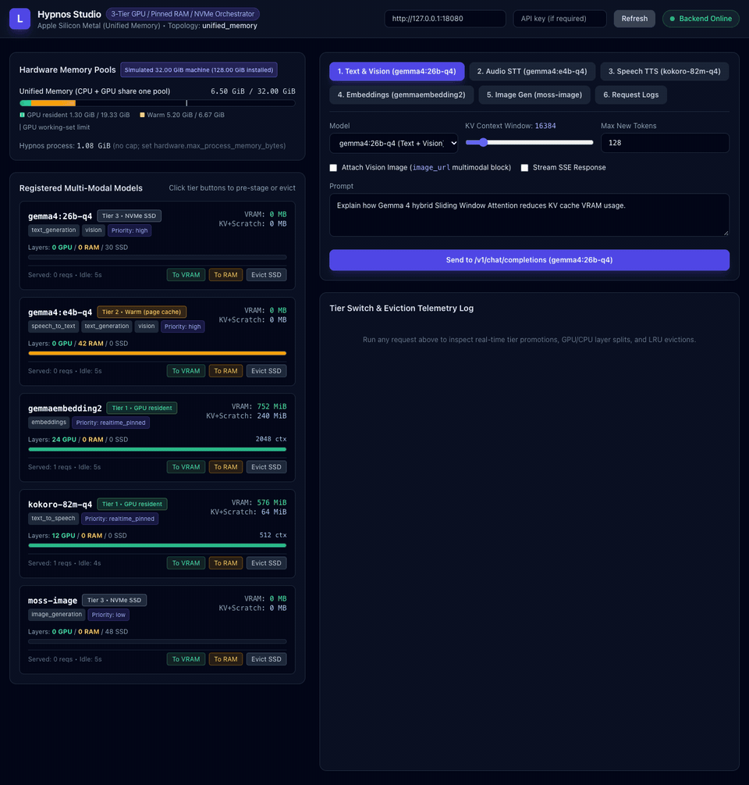

Engines linked in-process
llama.cpp with libmtmd, stable-diffusion.cpp, ONNX Runtime with espeak-ng, docling.rs and GLiNER2.5 are compiled into the binary. No Python, no runner process, no second server competing for the GPU.
Open source · Rust · CUDA and Metal · Desktop app
Hypnos serves chat, vision, speech-to-text, text-to-speech, embeddings, image generation, document conversion and entity extraction from a single process, through the OpenAI API, tool calling included. A lease-based scheduler decides what lives in VRAM so you don't have to.

The same benchmark (backend/scripts/bench.sh) on both machines, 2026-10-31. Full reports, including KV parking, MoE expert offload, the voice round trip and slot counts, in docs/bench.
Why Hypnos
Built for the machine that has to serve a whole multi-modal stack at once, where VRAM is the bottleneck.
llama.cpp with libmtmd, stable-diffusion.cpp, ONNX Runtime with espeak-ng, docling.rs and GLiNER2.5 are compiled into the binary. No Python, no runner process, no second server competing for the GPU.
Tier 1 is GPU VRAM (Metal's share of unified memory on Apple Silicon), Tier 2 is page-locked host RAM that promotes over PCIe without touching the disk, Tier 3 is the memory-mapped model file on NVMe.
realtime_pinned models never leave the GPU, high ones are kept warm in RAM, low ones are evicted first. A lease keeps a model resident for exactly as long as a request uses it.
After every load and unload the planner compares its bookings with the device's actual free memory and never hands out more than the GPU really has. Models that don't fully fit run with part of their layers on the GPU.
Chat with streaming, images, audio and tool calling, embeddings, transcription, speech with streaming synthesis, image generation. Optional API keys, in-process HTTPS, CORS for loopback by default.
A live playground shows each model's tier as requests come in. Every response carries its placement and timing, /metrics is Prometheus, and a request log keeps recent calls.
With KV parking on, a chat model evicted for another one saves its conversations' KV cache in host RAM and restores it in milliseconds when it comes back, so the next turn prefills only what is new.
On a discrete GPU, a Mixture-of-Experts model can keep its expert weights on the CPU: Gemma 4 26B-A4B needs 3 GB of VRAM instead of 15.8 GB and stays resident next to the image model, at a cost in speed. Off by default.
A curated catalog of models Hypnos has been tested with, each in several quantizations. hypnos advise --needs chat,voice,documents recommends a lineup that fits your GPU and RAM, sized with the scheduler's own planner, and writes the config.
Add a model, swap it for another variant or remove it with one call, no restart. Requests that arrive during a swap wait for it instead of failing, and the changes survive a restart.
reasoning_effort from low to high turns on a model's thinking with a token budget. The thoughts come back as reasoning_content, in a collapsible panel in the playground and the desktop app.
Workload profiles set priorities for an outcome (voice_assistant, interactive_chat, ...). Eviction keeps the models asked for most; a request can name the model it needs next; one with a deadline is refused at once instead of queued past it; p95 is tracked per workflow.
How it works
Each request asks the scheduler for a model. If it is already on the GPU with enough context reserved, the request runs at once. Otherwise the planner computes a placement, evicts idle lower-priority models, and promotes the weights from RAM or disk. The request holds a lease for the model's residency and releases it when the stream ends.
API surface
| Endpoint | What it serves | Notes |
|---|---|---|
POST /v1/chat/completions | Text, vision and audio chat | SSE streaming, images and audio clips in messages, tool calling (tools, tool_choice), thinking levels (reasoning_effort, thoughts in reasoning_content), continuous batching across slots, KV prefix reuse |
POST /v1/embeddings | Dense vector embeddings | Any GGUF embedding model llama.cpp loads |
POST /v1/audio/transcriptions | Speech-to-text | Multipart or JSON; Gemma 4 and LFM3-Audio through libmtmd |
POST /v1/audio/speech | Text-to-speech | stream: true returns PCM or an open-ended WAV as it is synthesized |
POST /v1/images/generations | Image generation | stable-diffusion.cpp; MOSS-Image in the default lineup |
POST /v1/documents/convert extension | PDFs, images and office files to Markdown or JSON | docling.rs page by page, OCR, picture descriptions through a vision model |
POST /v1/entities extension | Zero-shot named-entity extraction | GLiNER2.5, labels chosen per request, multilingual |
GET /v1/models/catalog · POST /v1/advisor extension | Tested models and a lineup for a machine | Variants, what is on disk, the config block; a recommended lineup for given VRAM, RAM and needs |
POST /v1/models · PUT / DELETE /v1/models/{id} extension | The model pool, live | Add, swap and remove models without a restart; requests wait for a swap; admin key when keys are set |
GET /v1/memory/status · POST /v1/memory/tier | Tier snapshot and manual moves | Refused with 429 while the model is leased |
/v1/memory/kv-park · POST /v1/models/{id}/moe-offload extension | Runtime switches | KV parking on or off with its RAM cap and parked conversations; a MoE model's expert offload mode |
GET /metrics · /health · /ready · /v1/logs | Operations | Prometheus text, probes, recent request log with timing split |
curl http://localhost:9999/v1/chat/completions \
-H "Content-Type: application/json" \
-d '{"model": "gemma4:e4b-q4",
"messages": [{"role": "user", "content": "Hello!"}]}'from openai import OpenAI
client = OpenAI(base_url="http://localhost:9999/v1", api_key="unused")
print(client.chat.completions.create(
model="gemma4:e4b-q4",
messages=[{"role": "user", "content": "Hello!"}],
).choices[0].message.content)Default lineup
Downloaded with one command from public Hugging Face repositories. Below them, the catalog: 27 more tested models, from a 0.8B chat model to 35B Mixture-of-Experts models, speech models that hear and speak, and image models that edit. hypnos advise picks a lineup from it for any machine. Bring your own: any GGUF that llama.cpp loads works for chat and embeddings, with the chat template read from the file.
| Model | Serves | Engine | Size | Tier policy |
|---|---|---|---|---|
gemma4:26b-q4 | Text generation + vision | ggml_llama | 14.7 GiB | high warm in RAM, promoted on demand |
gemma4:e4b-q4 | Audio, speech-to-text + chat | ggml_llama | 5.2 GiB | high warm in RAM, promoted on demand |
kokoro-82m-q4 | Text-to-speech | onnx_runtime | 155 MiB | realtime pinned always resident, runs on CPU |
gemmaembedding2 | Embeddings | ggml_llama | 295 MiB | realtime pinned always in VRAM |
moss-image | Image generation | ggml_diffusion | 9 GiB | low promoted on demand, evicts idle models |
docling | Document conversion | docling | 310 MiB | normal CPU, host RAM only, loads in 0.3 s |
gliner2.5-multi | Entity extraction | gliner | 1.15 GiB | normal CPU, host RAM only, loads in under a second |
The lineup above plus 27 more. Thinking, tool calls, images, transcription, speech and memory were checked on each before it went in. Pick from it in the desktop app, the playground or with hypnos advise; add one to a running server with POST /v1/models.
| Model | Files | Can | Good for |
|---|---|---|---|
qwen3.6:35b-a3b | 21.3 GB | thinkingtoolssees | Strongest model that stays fast: 3B active parameters, 256k context |
nemotron3.5-lightning:30b-a3b | 18.9 GB | thinkingtools | Very long documents (1M-token context) and agents |
qwen3.8:27b | 19.9 GB | thinkingtoolssees | The best dense answers, with vision |
gemma4:31b-q4 | 19.2 GB | thinkingtoolssees | Gemma's strongest answers and image understanding |
gemma4:26b-q4 | 15.8 GB | thinkingtoolsseeslineup | The lineup's chat model: strong and fast (4B active) |
glm-4.7-flash | 18.2 GB | thinkingtools | Tool use and multi-step agents |
qwen3-coder:30b-a3b | 18.0 GB | tools | Code and coding agents |
lfm2.5:24b-a2b | 14.5 GB | thinking | Fast thinking chat on large machines (2B active) |
gemma4:12b-q4 | 7.4 GB | thinkingtoolsseeshears | A 16-24 GB machine's main model |
qwen3.5:9b | 6.6 GB | thinkingtoolssees | Mid-size chat and vision |
nemotron3.5-bolt:e4b | 8.0 GB | thinkingtools | Quick text chat and tool use, 64k context |
gemma4:e4b-q4 | 5.6 GB | thinkingtoolsseeshearslineup | Hears, sees and chats on small machines |
qwen3.5:4b | 3.4 GB | thinkingtoolssees | Compact chat and vision |
gemma4:e2b-q4 | 3.8 GB | thinkingtoolsseeshears | The smallest Gemma, in 8 GB |
qwen3.5:2b | 2.0 GB | thinkingtoolssees | Small chat and vision |
lfm3:1.7b | 1.8 GB | thinkingtools | The fastest chat on any machine |
qwen3.5:0.8b | 1.0 GB | thinkingtoolssees | Captions and simple tool calls |
| Model | Files | Can | Good for |
|---|---|---|---|
minicpm-v:4.6 | 1.6 GB | seestools | Image questions and OCR in very little memory |
lfm3-vl:2b | 2.2 GB | seesthinkingtools | Describing images, with thinking |
| Model | Files | Can | Good for |
|---|---|---|---|
lfm3-omni:2b | 2.8 GB | hearsspeaksseestools | One small model for text, images, transcription and speech (19 languages) |
lfm3-audio:2b | 2.4 GB | hearsspeakstools | Voice assistants: hears, chats and speaks |
qwen3-asr:1.7b | 2.8 GB | hears | The most accurate transcription: 30 languages, detects the language |
qwen3-asr:0.6b | 1.2 GB | hears | The same recognizer, smaller |
qwen3-tts:1.7b | 2.5 GB | speaks | 10 languages and voice cloning from a reference clip |
kokoro-82m-q4 | 0.4 GB | speakslineup | Fast, clear English speech on the CPU |
| Model | Files | Can | Good for |
|---|---|---|---|
flux2-klein:4b | 5.3 GB | edits | The quickest (4 steps), and it edits images |
flux3-image-klein | 6.3 GB | edits | The best detail and text in images (FLUX Kommunity license: non-commercial, or under US$5M revenue) |
iris-3b-turbo | 8.5 GB | Seconds per image: 4 steps, no VAE | |
z-image-turbo | 6.7 GB | Photorealism and legible text (8 steps) | |
ernie-image-turbo | 7.5 GB | Distilled 8-step generation | |
moss-image | 9.4 GB | lineup | The lineup's image model |
| Model | Files | Can | Good for |
|---|---|---|---|
gemmaembedding2 | 0.3 GB | lineup | Vector embeddings for search and RAG |
docling | 0.3 GB | lineup | PDF, Office and HTML to Markdown and JSON |
gliner2.5-multi | 1.2 GB | lineup | Zero-shot named entities, multilingual |
[[models]]
id = "qwen3:8b" # the "model" name clients send
modality = "text_generation" # or "embeddings"
engine = "ggml_llama"
weights_path = "models/Qwen3-8B-Q4_K_M.gguf"
priority = "high" # realtime_pinned | high | normal | low
initial_tier = "tier2_pinned_ram" # stage in RAM at startup
[models.arch]
default_context_len = 8192 # the rest is read from the GGUF header
kv_dtype = "q8_0" # f16 | q8_0 | q4_0Quickstart
Prebuilt archives for Linux x64 (CUDA), Windows x64 (CUDA) and macOS arm64 (Metal), a Docker image for CUDA, or a build from source in 10 to 20 minutes.
Unpack a release archive and run everything from that folder. The archive includes the playground, the example config and a model downloader.
./scripts/fetch-models.sh # the default lineup, ~33 GB into models/ (or one model id)
./hypnos # reads hypnos.toml; API and playground on http://127.0.0.1:9999Windows: powershell -ExecutionPolicy Bypass -File scripts\fetch-models.ps1, then .\hypnos.exe. The CUDA builds need an NVIDIA GPU from Turing on (RTX 20 or newer) and a driver 570+; Linux also needs glibc 2.39+ and the CUDA 12 runtime libraries; macOS needs Apple Silicon and macOS 14+.
Linux with an NVIDIA GPU and the NVIDIA Container Toolkit.
mkdir -p models
docker run --rm -v ./models:/opt/hypnos/models --entrypoint ./scripts/fetch-models.sh \
ghcr.io/advancedlogic/hypnos # ~33 GB, or append one model id
docker run --gpus all -p 9999:9999 -v ./models:/opt/hypnos/models ghcr.io/advancedlogic/hypnosMount your own config over /opt/hypnos/hypnos.toml or point HYPNOS_CONFIG at one. Set HYPNOS_API_KEYS before publishing the port beyond localhost.
Rust 1.92+ through rustup, CMake, Ninja and Node.js, plus either the CUDA toolkit with an NVIDIA GPU (MSVC 2022 on Windows) or an Apple Silicon Mac with the Xcode command line tools.
git clone https://github.com/advancedlogic/hypnos.git && cd hypnos
./backend/scripts/setup-build-env.sh # once per machine: GPU arch, toolchain pins
./backend/scripts/vendor.sh # pinned engine sources into backend/vendor/
./run.sh models # the default lineup into backend/models/
./run.sh build # backend + playground (Metal picked on Apple Silicon)
./run.sh start # API on :9999, playground on :5173Windows: setup-build-env.ps1 and run.bat with the same arguments. Design notes for Apple Silicon live in docs/apple-silicon.md.
Desktop app
Hypnos Desktop is a Tauri app for macOS, Windows and Linux. It connects to a Hypnos server on this machine or another one and picks the right model for each job from what the server reports.
On first run the app asks what you want to do, recommends models that fit the machine in plain words, downloads them and runs a short demo: a chat answer, an image described, a spoken answer transcribed back.
Pick a thinking level from Off to High per chat; the model's thoughts stream into a collapsible panel above the answer.
The Models dialog lists the tested models the server does not have yet: pick a variant and it is downloaded and added to the running server, or swapped for the one in use.
Images, PDFs and office documents (converted with docling), audio (transcribed) and video (soundtrack transcript plus sampled frames). Paste a URL and its content becomes part of the conversation.
Dictate with the microphone button, and have answers read aloud sentence by sentence while they stream.
Ask for a picture and the model calls the image tool; the image appears in the conversation and the model comments on it. Regenerate any answer from any turn.
A collapsible stats panel shows each model's tier, VRAM and RAM use and the last request's timing, with switches for KV parking and MoE offload. A request log shows every call.
Start and stop an installed hypnos from the app or the menu bar / tray icon, or connect to a remote one; the API key stays in the OS keychain.
Every release carries a .dmg for Apple Silicon, a .msi and a setup .exe for Windows, and a .deb and an .AppImage for Linux. The macOS app includes the server; on Windows and Linux it starts an installed one.
The installers are not notarized or signed yet: on macOS allow the first open in System Settings › Privacy & Security › Open Anyway; on Windows choose More info › Run anyway.
Where it fits
| Hypnos | Ollama | LocalAI | llama-swap | |
|---|---|---|---|---|
| Shape | one process, engines linked in | one server, a runner process per loaded model | API gateway over separate backend processes | proxy that starts and stops one server per model |
| Focus | every modality on one GPU at once | LLMs, easy model library | broadest set of backends and formats | swapping any OpenAI-compatible server |
| What is loaded | shared memory planner, priorities, leases, warm RAM tier | load on request, unload after an idle timeout | per backend | one model or group at a time |
Ollama for the easiest install and a curated library, LocalAI for a backend Hypnos doesn't have, vLLM or SGLang for multi-user datacenter throughput. Hypnos is for a voice assistant or an agent with speech, images and retrieval on one box, where VRAM is the bottleneck.